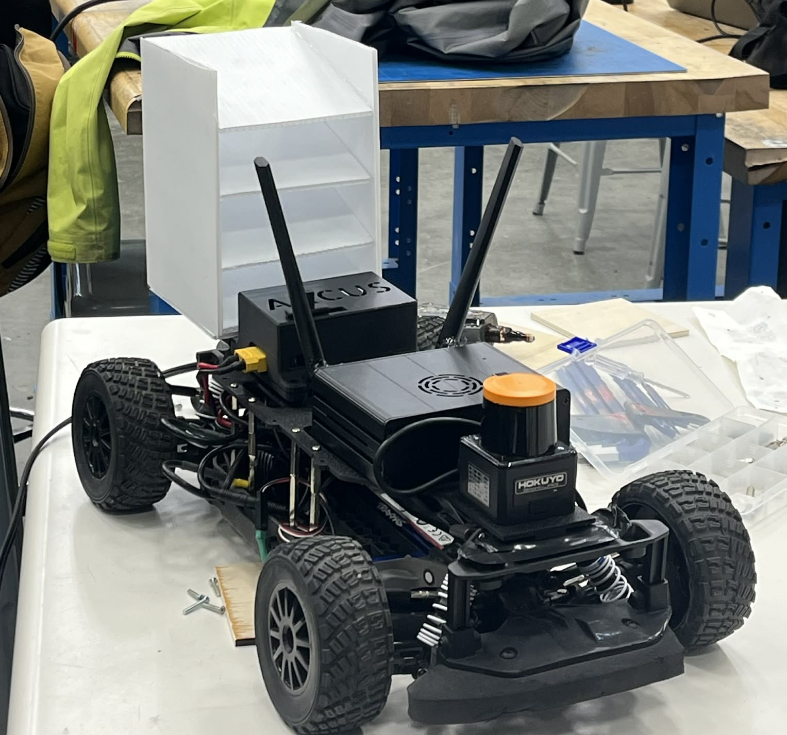
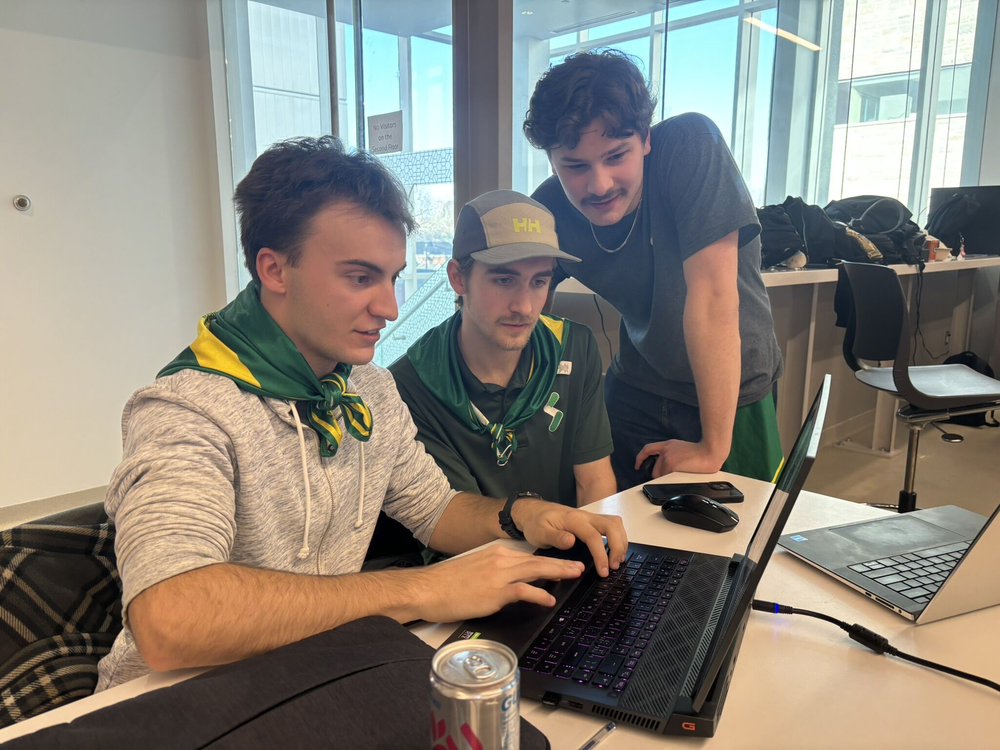

ARCUS is my team building an autonomous racing vehicle competing at Roboracer ICRA 2026 in Vienna. I implemented core localization and control algorithms including SLAM for real-time mapping, particle filtering for robust state estimation, and pure pursuit++ trajectory tracking. The full autonomous driving stack was developed using ROS2 on a Jetson Orin Nano, enabling real-time perception and decision-making at racing speeds. To see the car in action, take a look at our LinkedIn page.

ARCUS blends autonomous perception, state estimation, and control into a high-speed racing platform. My focus was on delivering stable localization and smooth trajectory tracking while keeping the stack real-time and competition-ready.
One of the things I developed is a real-time trajectory risk assessment system. Using a local costmap, the current trajectory is evaluated for potential collisions in real-time with a time-to-collision weighting scheme. This enables fluid switching between pure pursuit and disparity extender algorithms for dynamic obstacle avoidance and overtaking. I also implemented the simulation stack to test and validate algorithms in a controlled environment.
